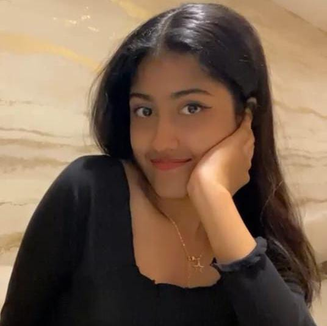

INFORMATION SCIENCE AND TECHNOLOGY
CURRENTLY PURSUING 5TH SEMESTER IN SIR M VISVESVARAYA INSTITUTE OF TECHNOLOGY
I have always dedicated myself by prioritizing Web Development cause it's fun to work with it.This has been my primary focus.Firstly i love to challenge myself in this field.Specially when I am under pressure I think a lot about how to make myself better from rest of them.
Currently pursuing 5th semester in Sir M Visvesvaraya Institute of Technology